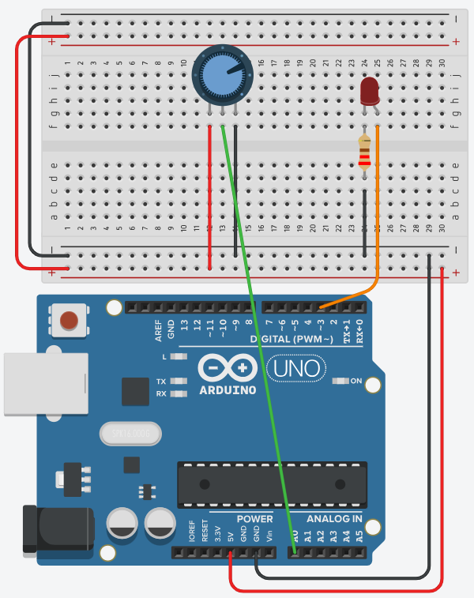

Led dimmen
Maak een programma waarbij een led van gedoofd naar volle sterkte gaat, en terug naar gedoofd. Het oplichten duurt ongeveer 2 seconden, het doven ongeveer 4 seconden.
Gebruik de analogWrite() instructie om een analoge waarde op de pin te zetten. Wat er dan echt op die pin gebeurt, welke pinnen het kunnen en waarom de waarde deze keer tussen 0 en 255 ligt in plaats van 0 en 1023, staat op analogWrite().

Pin 3 is een van de pinnen met een ~ ervoor, en dat is precies waarom die hier gebruikt wordt. De potentiometer links op het schema laat je gewoon staan: in deze oefening gebruik je ze niet, in de volgende weer wel.
Vragen
De periode T is de duur van één volledige cyclus die steeds wordt herhaald. Een cyclus bestaat hier uit het oplichten en het doven na elkaar, dus de periode is 2 s + 4 s = 6 s.
De relatie tussen frequentie en periode is f = 1 / T.
De frequentie is hier dus 1 / 6 s ≈ 0,17 Hz.
Dat is dezelfde rekenweg als bij het looplicht in labo 1: je deelt de tijd van een cyclus door het aantal stappen. Alleen zijn dat er hier geen 4 maar 256, want analogWrite() gaat van 0 tot en met 255.
Oplichten: 2000 ms / 256 ≈ 8 ms per stap.
Doven: 4000 ms / 256 ≈ 16 ms per stap.
Je komt daar niet exact op uit, want elke analogWrite() en elke lusdoorgang kost ook tijd. Vandaar dat er ongeveer 2 en 4 seconden gevraagd wordt.
Het hangt er vanaf welke Arduino je gebruikt. Je kan dit enkel doen naar een PWM (Pulse Width Modulation) pin, maar niet bij iedere Arduino zijn die PWM-pinnen dezelfde.
Op deze website zie je een overzicht per Arduino waar je die PWM-pinnen terug kan vinden. Ze worden aangeduid met een ~ op de PCB.
Voor de UNO is dat bijvoorbeeld pin 11, 10, 9, 6, 5 en 3.

Nee, dat is een truc met de pulsbreedte. De gemiddelde waarde komt dan overeen met de uitgestuurde analoge spanning.

Nee, want de uitgangskarakteristiek van een led is niet lineair.
Afhankelijk van de kleur van de led is er een andere doorlaatspanning. Bij een rode led is dat bijvoorbeeld 1,7 V.
Zolang de spanning over de led lager is dan die 1,7 V is de led dus gedoofd. Eenmaal hoger dan de doorlaatspanning gaat dit eerder exponentieel.
5 V.
Let op: de waarde die je uitstuurt is deze keer niet tussen 0 en 1023 maar wel tussen 0 en 255. Zie ook analogWrite() - Arduino Reference.
Om de spanning te berekenen passen we opnieuw de regel van 3 toe.
255 = 5 V, dus 1 = 5 V / 255 = 0,01960 V.
128 * 0,01960 V = 2,5088 V.
Door er een condensator (met eventueel nog een weerstand, dus een RC-combinatie) op te zetten. Die gedraagt zich als een laagdoorlaatfilter waardoor het PWM-signaal afgevlakt wordt en er effectief een spanning op de uitgang komt te staan in plaats van een blokgolf.
Dan zet je er een transistor tussen, net zoals bij de teller op een dubbel 7-segment display in labo 1. De pin stuurt dan alleen nog de basis, en de stroom zelf komt uit de 5V-pin of uit een externe voeding. Zie Vermogen schakelen.
analogWrite() werkt daar gewoon op: het PWM-signaal op de basis schakelt de transistor honderden keren per seconde aan en uit, en zo dim je een last die veel meer stroom trekt dan een pin aankan.
Indienen
Sla je oefening op.
Overloop volgende checklist om je oefening zelf te evalueren:
Oplossing
De led hangt op een PWM-pin (aangeduid met een ~,
bijvoorbeeld pin 3). Met een for-lus laat je de helderheid
stap voor stap oplopen van 0 naar 255 en daarna weer terug naar 0. Elke
stap zet je met analogWrite() op de pin, met telkens een
korte delay() ertussen.
De duur van die delay() volgt uit de gevraagde tijden:
2000 ms / 256 stappen ≈ 8 ms voor het oplichten en
4000 ms / 256 stappen ≈ 16 ms voor het doven. Samen geeft
dat een periode van 6 seconden, ofwel een frequentie van ongeveer
0,17 Hz.
const int ledPin = 3; // led op een PWM-pin (~)
void setup()
{
pinMode(ledPin, OUTPUT);
}
void loop()
{
// in ongeveer 2 seconden feller
for (int helderheid = 0; helderheid <= 255; helderheid++)
{
analogWrite(ledPin, helderheid);
delay(8);
}
// in ongeveer 4 seconden terug gedoofd
for (int helderheid = 255; helderheid >= 0; helderheid--)
{
analogWrite(ledPin, helderheid);
delay(16);
}
}